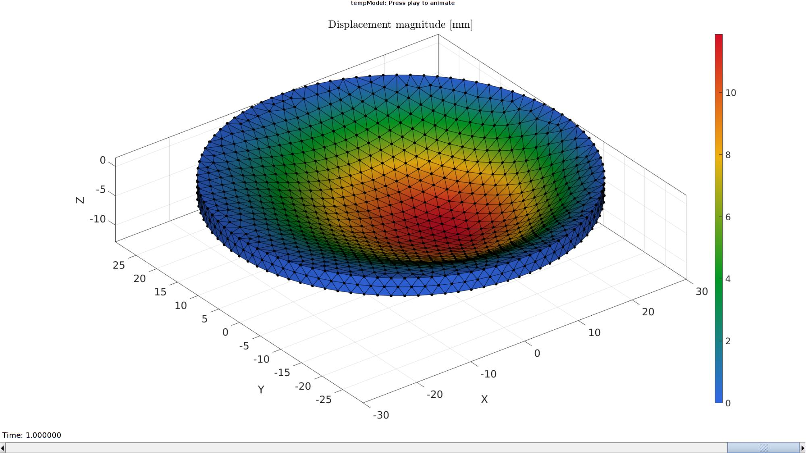
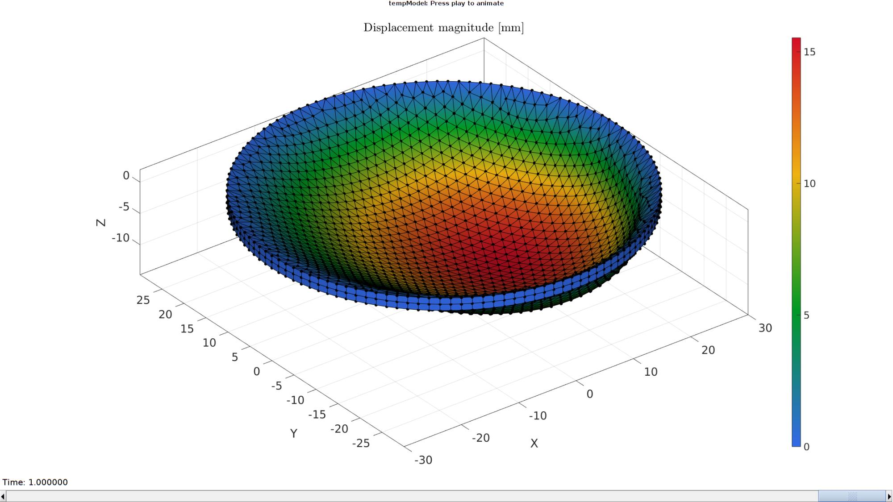

DEMO_febio_0013_disc_pressure_varying
Below is a demonstration for:
- Building geometry for a thin disc with tetrahedral elements
- Defining the boundary conditions
- Coding the febio structure
- Running the model
- Importing and visualizing the displacement and stress results
Contents
- Keywords
- Plot settings
- Control parameters
- Creating model geometry and mesh
- Defining the boundary conditions
- Defining the boundary conditions
- Create spatially varying pressure
- Defining the FEBio input structure
- Quick viewing of the FEBio input file structure
- Exporting the FEBio input file
- Running the FEBio analysis
- Import FEBio results
Keywords
- febio_spec version 4.0
- febio, FEBio
- pressure loading, spatially varying pressure, non-constant pressure
- tetrahedral elements, hex4
- tetgen
- disc
- static, solid
- hyperelastic, Ogden
- displacement logfile
- stress logfile
clear; close all; clc;
Plot settings
fontSize=20; faceAlpha1=0.8; markerSize=25; markerSize2=20; lineWidth=3;
Control parameters
% Path names defaultFolder = fileparts(fileparts(mfilename('fullpath'))); savePath=fullfile(defaultFolder,'data','temp'); % Defining file names febioFebFileNamePart='tempModel'; febioFebFileName=fullfile(savePath,[febioFebFileNamePart,'.feb']); %FEB file name febioLogFileName=[febioFebFileNamePart,'.txt']; %FEBio log file name febioLogFileName_disp=[febioFebFileNamePart,'_disp_out.txt']; %Log file name for exporting displacement febioLogFileName_stress=[febioFebFileNamePart,'_stress_out.txt']; %Log file name for exporting force %Load pressureValueMin=0.1e-4; pressureValueMax=2.0e-4; loadCase=1; switch loadCase case 1 loadType='pressure'; case 2 loadType='traction'; end elementType='penta6'; % 'penta6' or 'tet4' %Specifying dimensions and number of elements pointSpacing=1.5; discRadius=30; discHeight=2; %Material parameter set c1=1e-3; %Shear-modulus-like parameter m1=2; %Material parameter setting degree of non-linearity k_factor=1e2; %Bulk modulus factor k=c1*k_factor; %Bulk modulus % FEA control settings numTimeSteps=10; %Number of time steps desired max_refs=25; %Max reforms max_ups=0; %Set to zero to use full-Newton iterations opt_iter=6; %Optimum number of iterations max_retries=5; %Maximum number of retires dtmin=(1/numTimeSteps)/100; %Minimum time step size dtmax=1/numTimeSteps; %Maximum time step size runMode='external';% 'internal' or 'external'
Creating model geometry and mesh
switch elementType case 'tet4'
% Derive patch data for a disc inputStruct.cylRadius=discRadius; inputStruct.numRadial=ceil((discRadius*2*pi)/pointSpacing); inputStruct.cylHeight=discHeight; inputStruct.numHeight=ceil(discHeight/pointSpacing); inputStruct.meshType='tri'; inputStruct.closeOpt=1; [Fs,Vs,Cs]=patchcylinder(inputStruct); % The disc is meshed with tetrahedral elements using tetgen inputStruct.stringOpt='-pq1.2AaY'; inputStruct.Faces=Fs; inputStruct.Nodes=Vs; inputStruct.holePoints=[]; inputStruct.faceBoundaryMarker=Cs; %Face boundary markers inputStruct.regionPoints=getInnerPoint(Fs,Vs); %region points inputStruct.regionA=tetVolMeanEst(Fs,Vs); %Volume for regular tets inputStruct.minRegionMarker=2; %Minimum region marker [meshStruct]=runTetGen(inputStruct); % Mesh model using tetrahedral elements using tetGen % Access model element and patch data Fb=meshStruct.facesBoundary; Cb=meshStruct.boundaryMarker; V=meshStruct.nodes; CE=meshStruct.elementMaterialID; E=meshStruct.elements;
Visualize mesh
hFig=cFigure;
subplot(1,2,1); hold on;
title('Model boundary surfaces and labels','FontSize',fontSize);
gpatch(Fb,V,Cb,'k',faceAlpha1);
colormap(gjet(6)); icolorbar;
axisGeom(gca,fontSize);
hs=subplot(1,2,2); hold on;
title('Cut view of solid mesh','FontSize',fontSize);
optionStruct.hFig=[hFig hs];
meshView(meshStruct,optionStruct);
axisGeom(gca,fontSize);
drawnow;
Defining the boundary conditions
The visualization of the model boundary shows colors for each side of the disc. These labels can be used to define boundary conditions.
%Define supported node sets bcSupportList=unique(Fb(Cb==1,:)); %Node set part of selected face %Define pressure surface F_pressure=fliplr(Fb(Cb==2,:)); %The top face set
case 'penta6'
nc=ceil((2*pi*discRadius)./pointSpacing); %Number of points in circumference
t=linspace(0,2*pi,nc+1)';
t=t(1:end-1);
regionTriMeshinputStructure.regionCell={discRadius.*[cos(t) sin(t)]};
regionTriMeshinputStructure.pointSpacing=pointSpacing;
regionTriMeshinputStructure.resampleCurveOpt=0;
[Fc,Vc]=regionTriMesh2D(regionTriMeshinputStructure);
numHeight=ceil(discHeight/pointSpacing);
[E,V,F1,F2]=patchThick(Fc,Vc,1,discHeight,numHeight);
F=element2patch(E,[],elementType);
indB=tesBoundary(F);
Fb= {F{1}(indB{1},:), F{2}(indB{2},:)};
Visualize mesh
cFigure;
gpatch(F,V,'o','k',0.5);
patchNormPlot(F,V);
axisGeom(gca,fontSize); camlight headlight;
gdrawnow;

Defining the boundary conditions
The visualization of the model boundary shows colors for each side of the disc. These labels can be used to define boundary conditions.
%Define supported node sets bcSupportList=unique(Fb{2}); %Node set part of selected face %Define pressure surface F_pressure=F2; %The top face set
end
Create spatially varying pressure
X=V(:,1); C_pressure=mean(X(F_pressure),2); %Initialize as X-coordinate C_pressure=C_pressure-min(C_pressure(:)); %Subtract minimum so range is 0-.. C_pressure=C_pressure./max(C_pressure(:)); %Devide by maximum so range is 0-1 C_pressure=C_pressure.^2; C_pressure=C_pressure.*(pressureValueMax-pressureValueMin)+pressureValueMin; %Scale/offset to pressure range
Visualizing boundary conditions. Markers plotted on the semi-transparent model denote the nodes in the various boundary condition lists.
hf=cFigure; title('Boundary conditions','FontSize',fontSize); xlabel('X','FontSize',fontSize); ylabel('Y','FontSize',fontSize); zlabel('Z','FontSize',fontSize); hold on; gpatch(Fb,V,'kw','none',0.5); hl(1)=plotV(V(bcSupportList,:),'k.','MarkerSize',markerSize); hl(2)=gpatch(F_pressure,V,C_pressure,'k',1); patchNormPlot(F_pressure,V); legend(hl,{'BC full support','Pressure surface'}); colormap(gjet(250)); colorbar; axisGeom(gca,fontSize); camlight headlight; drawnow;

Defining the FEBio input structure
See also febioStructTemplate and febioStruct2xml and the FEBio user manual.
%Get a template with default settings [febio_spec]=febioStructTemplate; %febio_spec version febio_spec.ATTR.version='4.0'; %Module section febio_spec.Module.ATTR.type='solid'; %Control section febio_spec.Control.analysis='STATIC'; febio_spec.Control.time_steps=numTimeSteps; febio_spec.Control.step_size=1/numTimeSteps; febio_spec.Control.solver.max_refs=max_refs; febio_spec.Control.solver.qn_method.max_ups=max_ups; febio_spec.Control.time_stepper.dtmin=dtmin; febio_spec.Control.time_stepper.dtmax=dtmax; febio_spec.Control.time_stepper.max_retries=max_retries; febio_spec.Control.time_stepper.opt_iter=opt_iter; %Material section materialName1='Material1'; febio_spec.Material.material{1}.ATTR.name=materialName1; febio_spec.Material.material{1}.ATTR.type='Ogden'; febio_spec.Material.material{1}.ATTR.id=1; febio_spec.Material.material{1}.c1=c1; febio_spec.Material.material{1}.m1=m1; febio_spec.Material.material{1}.c2=c1; febio_spec.Material.material{1}.m2=-m1; febio_spec.Material.material{1}.k=k; %Mesh section % -> Nodes febio_spec.Mesh.Nodes{1}.ATTR.name='nodeSet_all'; %The node set name febio_spec.Mesh.Nodes{1}.node.ATTR.id=(1:size(V,1))'; %The node id's febio_spec.Mesh.Nodes{1}.node.VAL=V; %The nodel coordinates % -> Elements partName1='Part1'; febio_spec.Mesh.Elements{1}.ATTR.name=partName1; %Name of this part febio_spec.Mesh.Elements{1}.ATTR.type=elementType; %Element type febio_spec.Mesh.Elements{1}.elem.ATTR.id=(1:1:size(E,1))'; %Element id's febio_spec.Mesh.Elements{1}.elem.VAL=E; %The element matrix % -> Surfaces surfaceName1='LoadedSurface'; febio_spec.Mesh.Surface{1}.ATTR.name=surfaceName1; febio_spec.Mesh.Surface{1}.tri3.ATTR.id=(1:1:size(F_pressure,1))'; febio_spec.Mesh.Surface{1}.tri3.VAL=F_pressure; % -> NodeSets nodeSetName1='bcSupportList'; febio_spec.Mesh.NodeSet{1}.ATTR.name=nodeSetName1; febio_spec.Mesh.NodeSet{1}.VAL=mrow(bcSupportList); %MeshDomains section febio_spec.MeshDomains.SolidDomain.ATTR.name=partName1; febio_spec.MeshDomains.SolidDomain.ATTR.mat=materialName1; %Boundary condition section % -> Fix boundary conditions febio_spec.Boundary.bc{1}.ATTR.name='FixedDisplacement01'; febio_spec.Boundary.bc{1}.ATTR.type='zero displacement'; febio_spec.Boundary.bc{1}.ATTR.node_set=nodeSetName1; febio_spec.Boundary.bc{1}.x_dof=1; febio_spec.Boundary.bc{1}.y_dof=1; febio_spec.Boundary.bc{1}.z_dof=1; %MeshData secion %-> Surface data loadDataName1='LoadData1'; switch loadType case 'pressure' febio_spec.MeshData.SurfaceData.ATTR.name=loadDataName1; febio_spec.MeshData.SurfaceData.ATTR.surface=surfaceName1; febio_spec.MeshData.SurfaceData.ATTR.data_type='scalar'; febio_spec.MeshData.SurfaceData.face.ATTR.lid=(1:1:numel(C_pressure))'; febio_spec.MeshData.SurfaceData.face.VAL=C_pressure; case 'traction' febio_spec.MeshData.SurfaceData.ATTR.name=loadDataName1; febio_spec.MeshData.SurfaceData.ATTR.surface=surfaceName1; febio_spec.MeshData.SurfaceData.ATTR.data_type='vec3'; febio_spec.MeshData.SurfaceData.face.ATTR.lid=(1:1:numel(C_pressure))'; febio_spec.MeshData.SurfaceData.face.VAL=[zeros(size(C_pressure)) zeros(size(C_pressure)) -C_pressure]; end %Loads section % -> Surface load switch loadType case 'pressure' febio_spec.Loads.surface_load{1}.ATTR.type='pressure'; febio_spec.Loads.surface_load{1}.ATTR.surface=surfaceName1; febio_spec.Loads.surface_load{1}.pressure.ATTR.lc=1; febio_spec.Loads.surface_load{1}.pressure.ATTR.type='map'; febio_spec.Loads.surface_load{1}.pressure.VAL=loadDataName1; febio_spec.Loads.surface_load{1}.symmetric_stiffness=1; case 'traction' febio_spec.Loads.surface_load{1}.ATTR.type='traction'; febio_spec.Loads.surface_load{1}.ATTR.surface=surfaceName1; febio_spec.Loads.surface_load{1}.traction.ATTR.lc=1; febio_spec.Loads.surface_load{1}.traction.ATTR.type='map'; febio_spec.Loads.surface_load{1}.traction.VAL=loadDataName1; end %LoadData section % -> load_controller febio_spec.LoadData.load_controller{1}.ATTR.name='LC_1'; febio_spec.LoadData.load_controller{1}.ATTR.id=1; febio_spec.LoadData.load_controller{1}.ATTR.type='loadcurve'; febio_spec.LoadData.load_controller{1}.interpolate='LINEAR'; %febio_spec.LoadData.load_controller{1}.extend='CONSTANT'; febio_spec.LoadData.load_controller{1}.points.pt.VAL=[0 0; 1 1]; %Output section % -> log file febio_spec.Output.logfile.ATTR.file=febioLogFileName; febio_spec.Output.logfile.node_data{1}.ATTR.file=febioLogFileName_disp; febio_spec.Output.logfile.node_data{1}.ATTR.data='ux;uy;uz'; febio_spec.Output.logfile.node_data{1}.ATTR.delim=','; febio_spec.Output.logfile.element_data{1}.ATTR.file=febioLogFileName_stress; febio_spec.Output.logfile.element_data{1}.ATTR.data='s1'; febio_spec.Output.logfile.element_data{1}.ATTR.delim=','; febio_spec.Output.plotfile.compression=0;
Quick viewing of the FEBio input file structure
The febView function can be used to view the xml structure in a MATLAB figure window.
febView(febio_spec); %Viewing the febio file
Exporting the FEBio input file
Exporting the febio_spec structure to an FEBio input file is done using the febioStruct2xml function.
febioStruct2xml(febio_spec,febioFebFileName); %Exporting to file and domNode % febView(febioFebFileName);
Running the FEBio analysis
To run the analysis defined by the created FEBio input file the runMonitorFEBio function is used. The input for this function is a structure defining job settings e.g. the FEBio input file name. The optional output runFlag informs the user if the analysis was run succesfully.
febioAnalysis.run_filename=febioFebFileName; %The input file name febioAnalysis.run_logname=febioLogFileName; %The name for the log file febioAnalysis.disp_on=1; %Display information on the command window febioAnalysis.runMode=runMode; [runFlag]=runMonitorFEBio(febioAnalysis);%START FEBio NOW!!!!!!!!
%%%%%%%%%%%%%%%%%%%%%%%%%%%%%%%%%%%%%%%%%%%%%%%%%%%%%%%%%%%%%%%%%%%%%%%%%%%
--------> RUNNING/MONITORING FEBIO JOB <-------- 29-May-2023 10:10:22
FEBio path: /home/kevin/FEBioStudio/bin/febio4
# Attempt removal of existing log files 29-May-2023 10:10:22
* Removal succesful 29-May-2023 10:10:22
# Attempt removal of existing .xplt files 29-May-2023 10:10:22
* Removal succesful 29-May-2023 10:10:22
# Starting FEBio... 29-May-2023 10:10:22
Max. total analysis time is: Inf s
* Waiting for log file creation 29-May-2023 10:10:22
Max. wait time: 30 s
* Log file found. 29-May-2023 10:10:22
# Parsing log file... 29-May-2023 10:10:22
number of iterations : 11 29-May-2023 10:10:24
number of reformations : 11 29-May-2023 10:10:24
------- converged at time : 0.1 29-May-2023 10:10:24
number of iterations : 6 29-May-2023 10:10:24
number of reformations : 6 29-May-2023 10:10:24
------- converged at time : 0.174116 29-May-2023 10:10:24
number of iterations : 5 29-May-2023 10:10:24
number of reformations : 5 29-May-2023 10:10:24
------- converged at time : 0.248233 29-May-2023 10:10:24
number of iterations : 5 29-May-2023 10:10:24
number of reformations : 5 29-May-2023 10:10:24
------- converged at time : 0.32482 29-May-2023 10:10:24
number of iterations : 4 29-May-2023 10:10:25
number of reformations : 4 29-May-2023 10:10:25
------- converged at time : 0.403641 29-May-2023 10:10:25
number of iterations : 4 29-May-2023 10:10:25
number of reformations : 4 29-May-2023 10:10:25
------- converged at time : 0.486698 29-May-2023 10:10:25
number of iterations : 4 29-May-2023 10:10:25
number of reformations : 4 29-May-2023 10:10:25
------- converged at time : 0.573144 29-May-2023 10:10:25
number of iterations : 4 29-May-2023 10:10:26
number of reformations : 4 29-May-2023 10:10:26
------- converged at time : 0.662301 29-May-2023 10:10:26
number of iterations : 4 29-May-2023 10:10:26
number of reformations : 4 29-May-2023 10:10:26
------- converged at time : 0.753626 29-May-2023 10:10:26
number of iterations : 5 29-May-2023 10:10:26
number of reformations : 5 29-May-2023 10:10:26
------- converged at time : 0.846686 29-May-2023 10:10:26
number of iterations : 5 29-May-2023 10:10:27
number of reformations : 5 29-May-2023 10:10:27
------- converged at time : 0.940409 29-May-2023 10:10:27
number of iterations : 5 29-May-2023 10:10:27
number of reformations : 5 29-May-2023 10:10:27
------- converged at time : 1 29-May-2023 10:10:27
Elapsed time : 0:00:04 29-May-2023 10:10:27
N O R M A L T E R M I N A T I O N
# Done 29-May-2023 10:10:27
%%%%%%%%%%%%%%%%%%%%%%%%%%%%%%%%%%%%%%%%%%%%%%%%%%%%%%%%%%%%%%%%%%%%%%%%%%%
Import FEBio results
if runFlag==1 %i.e. a succesful run
Importing nodal displacements from a log file
dataStruct=importFEBio_logfile(fullfile(savePath,febioLogFileName_disp),0,1);
%Access data
N_disp_mat=dataStruct.data; %Displacement
timeVec=dataStruct.time; %Time
%Create deformed coordinate set
V_DEF=N_disp_mat+repmat(V,[1 1 size(N_disp_mat,3)]);
Plotting the simulated results using anim8 to visualize and animate deformations
DN_magnitude=sqrt(sum(N_disp_mat(:,:,end).^2,2)); %Current displacement magnitude % Create basic view and store graphics handle to initiate animation hf=cFigure; %Open figure gtitle([febioFebFileNamePart,': Press play to animate']); title('Displacement magnitude [mm]','Interpreter','Latex') hp=gpatch(Fb,V_DEF(:,:,end),DN_magnitude,'k',1); %Add graphics object to animate switch elementType case 'tet4' hp.Marker='.'; hp.MarkerSize=markerSize2; hp.FaceColor='interp'; case 'penta6' hp(1).Marker='.'; hp(1).MarkerSize=markerSize2; hp(1).FaceColor='interp'; hp(2).Marker='.'; hp(2).MarkerSize=markerSize2; hp(2).FaceColor='interp'; end axisGeom(gca,fontSize); colormap(gjet(250)); colorbar; caxis([0 max(DN_magnitude)]); axis(axisLim(V_DEF)); %Set axis limits statically camlight headlight; % Set up animation features animStruct.Time=timeVec; %The time vector for qt=1:1:size(N_disp_mat,3) %Loop over time increments DN_magnitude=sqrt(sum(N_disp_mat(:,:,qt).^2,2)); %Current displacement magnitude %Set entries in animation structure switch elementType case 'tet4' animStruct.Handles{qt}=[hp hp]; %Handles of objects to animate animStruct.Props{qt}={'Vertices','CData'}; %Properties of objects to animate animStruct.Set{qt}={V_DEF(:,:,qt),DN_magnitude}; %Property values for to set in order to animate case 'penta6' animStruct.Handles{qt}=[hp(1) hp(1) hp(2) hp(2)]; %Handles of objects to animate animStruct.Props{qt}={'Vertices','CData','Vertices','CData'}; %Properties of objects to animate animStruct.Set{qt}={V_DEF(:,:,qt),DN_magnitude,V_DEF(:,:,qt),DN_magnitude}; %Property values for to set in order to animate end end anim8(hf,animStruct); %Initiate animation feature drawnow;
Importing element stress from a log file
dataStruct=importFEBio_logfile(fullfile(savePath,febioLogFileName_stress),0,1);
%Access data
E_stress_mat=dataStruct.data;
E_stress_mat(isnan(E_stress_mat))=0;
 Plotting the simulated results using anim8 to visualize and animate deformations
[CV]=faceToVertexMeasure(E,V,E_stress_mat(:,:,end));
% Create basic view and store graphics handle to initiate animation
hf=cFigure; %Open figure
gtitle([febioFebFileNamePart,': Press play to animate']);
title('$\sigma_{1}$ [MPa]','Interpreter','Latex')
hp=gpatch(Fb,V_DEF(:,:,end),CV,'k',1); %Add graphics object to animate
switch elementType
case 'tet4'
hp.Marker='.';
hp.MarkerSize=markerSize2;
hp.FaceColor='interp';
case 'penta6'
hp(1).Marker='.';
hp(1).MarkerSize=markerSize2;
hp(1).FaceColor='interp';
hp(2).Marker='.';
hp(2).MarkerSize=markerSize2;
hp(2).FaceColor='interp';
end
axisGeom(gca,fontSize);
colormap(gjet(250)); colorbar;
caxis([min(E_stress_mat(:)) max(E_stress_mat(:))]/3);
axis(axisLim(V_DEF)); %Set axis limits statically
camlight headlight;
% Set up animation features
animStruct.Time=timeVec; %The time vector
for qt=1:1:size(N_disp_mat,3) %Loop over time increments
[CV]=faceToVertexMeasure(E,V,E_stress_mat(:,:,qt));
%Set entries in animation structure
switch elementType
case 'tet4'
animStruct.Handles{qt}=[hp hp]; %Handles of objects to animate
animStruct.Props{qt}={'Vertices','CData'}; %Properties of objects to animate
animStruct.Set{qt}={V_DEF(:,:,qt),CV}; %Property values for to set in order to animate
case 'penta6'
animStruct.Handles{qt}=[hp(1) hp(1) hp(2) hp(2)]; %Handles of objects to animate
animStruct.Props{qt}={'Vertices','CData','Vertices','CData'}; %Properties of objects to animate
animStruct.Set{qt}={V_DEF(:,:,qt),CV,V_DEF(:,:,qt),CV}; %Property values for to set in order to animate
end
end
anim8(hf,animStruct); %Initiate animation feature
drawnow;

end

GIBBON www.gibboncode.org
Kevin Mattheus Moerman, gibbon.toolbox@gmail.com
GIBBON footer text
License: https://github.com/gibbonCode/GIBBON/blob/master/LICENSE
GIBBON: The Geometry and Image-based Bioengineering add-On. A toolbox for image segmentation, image-based modeling, meshing, and finite element analysis.
Copyright (C) 2006-2023 Kevin Mattheus Moerman and the GIBBON contributors
This program is free software: you can redistribute it and/or modify it under the terms of the GNU General Public License as published by the Free Software Foundation, either version 3 of the License, or (at your option) any later version.
This program is distributed in the hope that it will be useful, but WITHOUT ANY WARRANTY; without even the implied warranty of MERCHANTABILITY or FITNESS FOR A PARTICULAR PURPOSE. See the GNU General Public License for more details.
You should have received a copy of the GNU General Public License along with this program. If not, see http://www.gnu.org/licenses/.